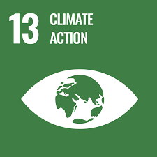
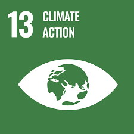
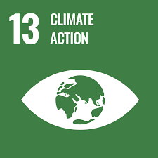

We are grade 11 IBDP students working collaboratively on our CSP Group 1 project.
Our aim is to explore and reflect upon the nuances of making fertilizers from
acid rain, delving into its implications through analytical and creative
approaches. This website serves as a platform to showcase our research,
ideas, and outcomes, reflecting our dedication to critical thinking and
effective communication.
Why?
Acid rain poses significant environmental and ecological challenges,
primarily due to its high acidity, which results from the atmospheric
reaction of pollutants like sulfur dioxide and nitrogen oxides. When
deposited, acid rain alters soil chemistry, leaching essential nutrients
and disrupting plant growth. It also harms aquatic ecosystems by acidifying
water bodies, leading to a decline in biodiversity. Furthermore, acid rain
accelerates the deterioration of buildings and monuments, causing economic
damage. Our project highlights the importance of addressing these issues by
not only mitigating the effects of acid rain but also transforming it into a
resource for agriculture. This approach underscores the potential to turn
environmental challenges into opportunities for sustainable development.
Project
Our project focuses on creating an innovative fertilizer by harnessing
acid rain, a pressing environmental issue. Using electrolysis, we extract
nitric acid from acid rain, which is then neutralized with ammonia to form
a practical and sustainable fertilizer. This hands-on approach not only
addresses the environmental impacts of acid rain but also demonstrates how
science can provide resourceful solutions to real-world challenges. Through
this project, we aim to merge scientific principles with creativity to
contribute to sustainable agricultural practices.
Materials
Dilute Nitric Acid (HNO₃)
Electrolysis Cell
Electrodes
Power Supply
Wires and Alligator Clips
Ammonia Solution (NH₃)
Water (distilled)
pH Meter and pH Strips
Stirring Rod (Glass or Plastic)
Thermometer
Glass Beakers
Procedure
Prepare Nitric Acid Solution.
Set up Electrolysis Equipment
Add Ammonia until Solution is neutral.
Use a pH meter or indicator solution to determine whether the substance is neutral.
Move Product into a Clean Container
Conclusion
By applying the 5 key science concepts, we have
created a project that not only addresses environmental
challenges but also offers a practical solution. Through
the electrolysis of acid rain, we have successfully produced
fertilizer and hydrogen fuel, utilizing the byproducts of
this process in a way that benefits the environment. This
project contributes to several Sustainable Development Goals
(SDGs), including:
SDG 2: Zero Hunger
SDG 6: Clean Water and Sanitation
SDG 13: Climate Action
SDG 15: Life on Land

During our experiment, we noticed some interesting results:
Electrolysis Efficiency: The electrolysis process
worked well, separating hydrogen gas and nitric acid
clearly. However, the amount of acid produced depended
on the voltage and the concentration of the electrolyte
we used.
Ammonia Neutralization: Adding ammonia to the nitric
acid solution caused a noticeable reaction. The pH
shifted slightly, and the resulting fertilizer was
stable with only a mild smell, showing the
neutralization was successful.
Final Product: The fertilizer worked well when tested
on small plants, which showed healthy growth after a
few days. We also collected hydrogen gas during the
process, which could potentially be used as a clean
energy source, though more testing would be needed to
confirm its effectiveness.
Contact Us!
We'd love to hear from you! If you have any questions, feedback, or inquiries about our project,
please feel free to reach out.

 
